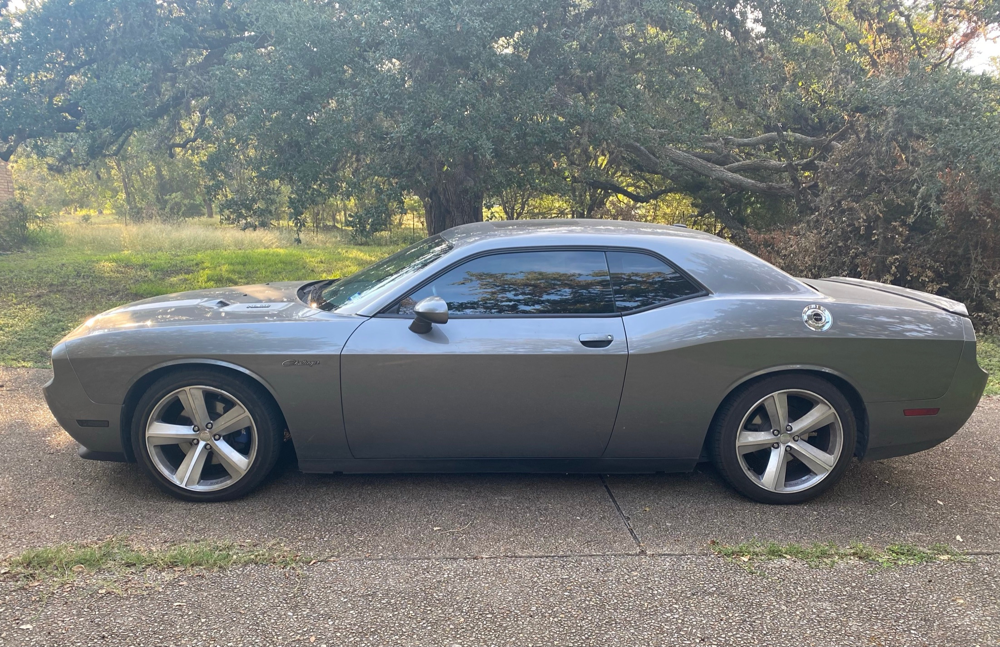

<!DOCTYPE html>
<html lang="en">
<head>
<meta charset="UTF-8">
<style>
  /* Use flexbox on the html/body to push the footer down */
  html, body {
    height: 100%;
    margin: 0;
  }

  body {
    font-family: "Segoe UI", Roboto, Helvetica, Arial, sans-serif;
    line-height: 1.6;
    color: #333;
    background-color: #f4f4f4;
    display: flex;
    flex-direction: column;
  }

  .content-wrapper {
    max-width: 800px;
    margin: 40px auto;
    padding: 0 20px;
    flex: 1 0 auto; /* This allows the content to grow and push the footer */
  }

  footer {
    flex-shrink: 0;
    text-align: center;
    padding: 20px;
    background-color: #eee; /* Light distinction for the footer area */
    border-top: 1px solid #ddd;
  }
.sig-container {
  text-align: center; /* This centers the image and the text */
  margin-top: 80px;   /* This creates that "spaced down" look (replaces the <br> tags) */
  padding-bottom: 40px;
}
  2011 Challenger RT 6-spd 

